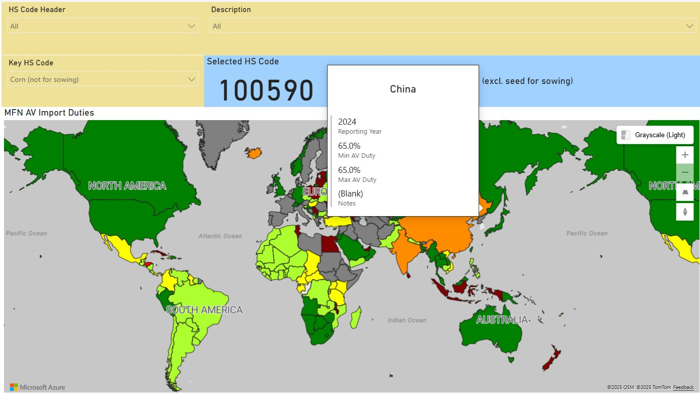

In this post, I use Power BI to visualize the import duties or tariffs for a group of products into different countries using data from the World Trade Organization (WTO).
Introduction
There are big discussions on tariffs and global trade given the changes being initiated by the US and its current administration. When previously imports into the US were mostly duty-free, most imports now are subject to a minimum duty of 10%.

The administration cites that these rates are retaliatory and is based on the tariffs countries impose on imports from the US directly or indirectly. There is a lot of debate and disagreement on how the numbers were arrived at, but it is clear that these are not the actual tariffs imposed by most of these countries on US imports.
The actual tariffs can actually be sourced from reputable organizations like the WTO. This information is compiled for the member countries (166 countries at the time of writing) and is made available online. The current version of the data download facility is accessible using this link, while the old tariff download facility is accessible using this link. (but is announced to be retired some time after March 2025)
Objectives
For this post, I will use the information that can be downloaded from WTO to achieve the following objectives:
Load and transform the data in Power BI;
Visually analyze the reported tariffs (MFN or Most-Favoured-Nation rates, which is the maximum rate that an WTO members charge other members) of different countries for a select number of products;
Compare some of these tariffs to the numbers reported by the USA on 2 April 2025
Scope and Limitations
This post, and the initial version of the resulting Power BI report will only focus on the MFN rates as reported in the WTO database. I will be using the old tariff facility, which is more convenient to download the data from, but comes with some limitations.
Limitation of future updates. The older tariff download facility is only updated up to March 2025, and will be retired eventually. At the moment, there should be no difference between the data between the old and new facility since both will only be reflecting 2024 as the most recent reporting year, but this will not be the case moving forward. Refreshing this analysis and the report at a later date will require using another dataset and modifying the data preparation or transformation steps
MFN Rates only. I will be limiting the analysis in this post to MFN rates, which should be the default maximum tariff charged by WTO members. While the information exists on preferential rates, or lower rates charged where there is a trade agreement signed between some countries, it is outside the scope of this post. I will, however, be looking into creating an update which takes preferential rates into account.
Only considers Tariff rates. It should be noted that the WTO report only considers tariffs as reported by the member countries. Any other import-related taxes or charges are excluded from their database and are therefore outside the scope of this post. These other taxes inlcudes sales or value-added taxes that may be applicable to imports, but also other more protective taxes like the ones applied in India as summarized in this 2022 article in the DHL website. Anyone analyzing the data should be aware that such taxes exist and is advised to look up the full cost of importation and not take the tariffs at face value.
Limited products. The tariffs are at a product, denoted by their HS code (up to 6 digits in the WTO facility) and the reporting country. Each request is made by specifying these, and while all countries can be selected, it is not possible to select all products. There is also a limit to the number of rows can be extracted at a time, so each data request can only cover a few HS codes at a time. For this first version, I have downloaded the information for the following HS codes, based on the first four digits:
0201xx and 0202xx - Beef or bovine meat
1005xx - Corn or maize
1006xx - Rice
3004xx - Medicaments (medicine) in fixed doses
2202xx - Flavored waters (non-alcoholic beverages with flavoring)
2709xx - Petroleum oil, crude
3401xx - Soap (for body washing)
8517xx - Telephone sets (includes smartphones)
Most of these were selected based on a few comments that circulated in the news (e.g., countries not accepting beef, rice or corn imports from the US, moving smart phone production to other countries, medicine being more expensive in the US) while some are relevant to my (previous) roles or experiences. (e.g., toilet soaps)
Data Loading and Preparation
This section will give a brief summary of the steps in the creation of the data model (semantic model) for the Power BI report. If the reader is not interested in the build part, they can skip ahead two sections to Analysis.
Below were the steps taken:
Download tariff data from WTO portal by 4-digit HS code. Given the row limit, it was safer to do download data for all countries by a single 4-digit HS code at a time. This means that the 9 HS code headers mentioned in the previous section were downloaded from the portal, in Excel format, one at a time, resulting to 9 different files. These files are kept in a single folder
Create reference data. I then created a separate file as the reference data which mapped the countries or reporters in the WTO database into countries recognized by Power BI, specifically by Azure Maps. The reference data also tagged 6-digit HS codes and included a flag to indicate which of these HS codes will I use for the analysis.
Loading into PowerBI. The WTO tariff data is loaded into PowerBI using a folder connection in order to capture all the extracts. This also includes any additional extracts that I plan to add in the future. (before the site gets decommissioned) The reference data is loaded using a connection to that single file.
Transformation in Power Query - Cleaning. The key transformation involves cleaning up the WTO data (see image below for sample) to remove the unnecessary columns and duplicates. There are duplicated entries for country(reporter) and prooduct pairs since the extract also includes information from different years. The deduplication is done by only keeping the most recent year’s data in the presence of duplicates.
Transformation in Power Query - Color Mapping. The main visualization to be used in this report will be a map visual, and the tariff rates will be indicated by color. I have included the color to use in a column (by adding a Conditional Column) in the data using the following rules:
- If there is a “Note”, which likely indicates a specific tariff, then that country should appear in maroon;
- If the maximum duty is zero, then it should appear in dark green;
- If the maximum duty is less than 20%, then it should appear in light green;
- If the maximum duty is less than 50%, then it should appear in yellow;
- If the maximum duty is less than 75%, then it should appear in orange;
- If the maximum duty is at least 75, then it should appear in red
Creation of Relationships and Measures. Relationships are created for the reporters and the HS codes into the tables from the reference file. A few measures were then created for this version of the report which will be used for the visuals.
Report Building
The first version of the report includes two pages that show similar information in different formats. The video below gives a preview of the current version of the report in action.
MFN Import Duty (Map View)

The first page allows the user to select a specific HS code using three slicers, and then shows the tariffs visually using an Azure Map visual. A tooltip is included which shows a hidden report that gives more context on the moused-over country. Countries with no data will appear in grey and will not show any data in their tooltips.
Matrix View
A second report gives the tariffs in a matrix. This allows the user to view tariffs for different products imported into the same country. This report only shows the rates for the key HS codes as defined in the reference file. A tooltip is also included to give the user more information for a given country-product pair.
Analysis
For the analyses in this post, I will try to answer a few questions, linked to the objectives, using the report created.
Are the high tariff rates correct?
As earlier mentioned, there is a lot of disagreement on the basis of the retaliatory tariffs imposed on countries. The US administration claims that the numbers are based on all trade barriers, and not only tariff.
I will not go into the detail of how the US computed the numbers they published, but for the sake of analysis, I will only focus on the actual tariff since it is the one that is directly comparable between US and the other countries. Are the rates close to the actual tariffs imposed by the countries? If there is a large difference, then it must come from the “nontariff barriers” or the numbers used are simply wrong.
To answer this, I will only look at the countries with the highest retaliatory rates. These are the following countries:
China: 67% imposed tariff on the US
European Union: 39% imposed tariff on the US
Vietnam: 90% imposed tariff on the US
Taiwan: 64% imposed tariff on the US
India: 52% imposed tariff on the US
Japan: 46% imposed tariff on the US
Using the matrix view, and selecting a handful of HS codes, we can show the tariffs for these countries in a table as below.
It is worth noting that these are MFN rates. If there are existing trade agreements between the US and some countries for these materials, then the rates are likely lower than what is shown.
The table above shows that there is currently very low tariff for smartphones, but for products like corn and beef, we see some high tariffs (20-80%) for some of the countries.
If we put these numbers side by side with the ones from the April 2 announcement, we get the following:
| Reporter | From US’ Apr 2 Announcement | From WTO Database (based on beef, corn and rice) |
|---|---|---|
| China | 67% | 20-65% |
| Taiwan | 64% | 0% |
| European Union | 39% | 0-7.7% |
| India | 52% | 30-80% |
| Japan | 46% | 0-39% |
| Vietnam | 90% | 30-40% |
EU and Taiwan actually have zero tariffs but are said to have 39% and 64% respectively (looks massively overstated)
China and India have up to 65% and up to 80% tariffs, but are said to have 67% and 52% respectively (looks understated given the non-tariff import taxes these countries are known to have)
Japan and Vietnam have up to 39% and up to 40% tariffs, but are said to have 46% and 90% respectively (looks overstated)
Based on these, it looks like with the exception of China and Japan, the published numbers in the April 2 announcement appear overstated, and in varying degrees.
Note that these observations do not take into account any possible free trade agreements that may exist with the US, so the degree of overstatement may even be larger.
What is the cost (tariff) of importing beef?
One statement raised by the US president is that Australia is not importing any US beef, which is one reason why they are being slapped with a 10% tariff. (even though most of the trade between the two countries is duty free, and even though the reason why beef imports from US are restricted are due to safety and biosecurity reasons)
Why is beef being singled out? Is it a freely traded product in the first place? Are there little to no tariffs for beef?
Beef is covered by multiple HS codes, but for this report and analysis, I will focus on frozen meat under the two HS codes:
020210 - Frozen bovine carcases and half-carcases (i.e., beef carcases)
020220 - Frozen bovine cuts, with bone in (i.e., beef cuts)
While I also have the data for fresh beef, (under HS code 0201xx) since Australia primarily exports frozen beef, I have opted to focus on that in this post.
Tariffs (MFN Duty) for Frozen Beef Carcases
Running the first page of the report on HS Code 020210 results in the following map:
We get the following insights:
Imports of frozen beef carcases into most of Europe (note, Germany in the map corresponds to the EU), Mexico, Southern Africa, Australia, and New Zealand are duty-free
Most of the countries are in the range of 1%-20% (light green) and 20%-50% (yellow) range
US has a tariff of 26.4% for imports in this category
Countries with very high import duty rates include Uganda (60%), Colombia (80%), and Morocco (200%)
Tariffs (MFN Duty) for Frozen Beef Cuts
Running the first page of the report on HS Code 020220 results in the following map:
We get the following insights:
Imports of frozen beef cuts into EU, Mexico, Southern Africa, and Australia are still duty-free. Most of the duties actually remain the same as in the previous category
New Zealand charges a fixed 7.7 USD per kg for imports in this category
We see more movement as China moves from yellow to light green, and Indonesia moves from light green (<20% duty) to now having a duty of 5% plus 2.3 USD per kg
US has a tariff of 4%-26.4% for imports in this category (and remains yellow in the chart since it is based on the maximum)
Based on these two charts, and without looking at all the other categories, it seems like tariff is not a very big barrier for beef imports. Big beef producers like Australia and Brazil are charging less than 10% tariffs, and China is only charging 12%. The US appears to be one of the countries that charge more for imports of beef, but I expect that this is not applicable to big trading partners, as they would have an FTA or a free trade agreement in place.
What is the cost (tariff) of importing rice?
Another statement that came out of the US side is on rice, specifically into Japan. They claim that Japan has imposed more than 700% in tariffs for rice imports from the US. The Japanese side has since refuted that, saying that tariffs only applied after a quota is met, that they still import a large amount of rice from the US, and the 700% is based on prices in 1999-2001.
Similar to beef, we can also look at what the actual tariffs on rice are using the data from WTO. Rice comes in a number of forms, so I will limit my analysis to two HS codes:
100610 - Rice in the husk (i.e., rough rice)
100630 - Semi-milled or wholly milled rice (i.e., milled rice)
Tariffs (MFN Duty) for Rough Rice
Running the first page of the report on HS Code 100610 results in the following map:
We get the following insights:
Imports of rough rice are duty-free into a number of countries including US, Canada, Australia and Japan
Unlike beef, there is a 7.7% tariff into the EU. Most of Latin America, Africa are also in this low tariff range of 0-20%
There are high tariffs into a number of countries like China (65%), India (80%), New Zealand (1.6 USD per kg), and Indonesia (20 USD per kg)
Tariffs (MFN Duty) for Milled Rice
Running the first page of the report on HS Code 100630 results in the following map:
We get the following insights:
Most of the countries that import rough rice duty-free also do the same for milled rice.
The only exception to the previous point is the US which charges 11.2% tariff on milled rice.
Russia also imports milled rice duty-free, while for rough rice they impose 10-30% tariff.
There are some changes to the tariffs on the high end which include India charging 70% (vs 80% for rough rice), New Zealand charging 1.1 USD per kg (vs 1.6 USD for rough rice), Indonesia charging 0.54 USD. (vs 20 USD for rough rice) These are all downward shifts compared to the rates for rough rice.
Based on these two charts, it looks like tariff barriers are generally lower for rice than for beef in the Americas and Africa, but not for most of Asia. Japan also consistently shows duty-free rates. (without considering quotas) For the rest of Asia, it looks like rice has a higher tariff compared to beef, which is understandable as the crop should be grown widely in the region.
What’s Next?
There are other products that I can analyze with the current version of the report, but I will end the post here. We were able to see how we can use the map visual to analyze the MFN rates from the WTO facility with minimal data transformation required.
The current report only shows the MFN rates, which gives a limited picture. The data from WTO includes information on preferential rates, which might be good to analyze as it will reveal countries that will have lower import barriers for specific products into a country of interest. Incorporating this will require some more intensive data transformation, but will bring a lot of value to someone interested in understanding low tariff opportunities. I look forward to sharing an updated version with these new view in a future post.